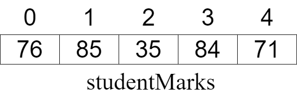

Arrays
An array stores many pieces of data but in the same variable. For example I could save the marks for 5 students in an array like:
This array has 5 elements (note that you usually start counting at 0 with arrays!) but they all have just one variable name (studentMarks). To refer to a specific mark you place the index of the mark after the variable name, usually in brackets. For example, you would refer to the mark of 84 as:
// array index studentMarks[3]
// array index studentMarks[3]
// array index studentMarks[3]
// array index studentMarks[3]
// array index studentMarks[3]
// array index studentMarks[3]
# array (or list) index studentMarks[3]
Arrays are an important programming concept because they allow a collection of related objects to be stored within a single variable. To declare an array, you usually must specify how many elements will be in the array during the declaration. This is because the compiler needs to reseve the required memory inside the the computer to stare all these variables. (There are ways to store groups of data where the size will change during the running of the program and we will get to them.)Here we are declaring the variable studentMarks and allowing 5 items in it:
// array index int studentMarks[5];
// array index int studentMarks[5];
// array index int[] studentMarks = new int[5];
// array index var studentMarks[5]int
// array index int [] studentMarks = new int[5];
// array index let studentMarks = new Array(5)
# array (or list) index studentMarks = []
Once you have an array, you will need to loop over it to add items to it or to see what the values are. It is usually a bad idea to Hard Code your loop ending point to a value. An array knows how many elements are in it and you should always use this. If someone changes the size of the array in the declaration, then no othe code will have to be changed.
Here is a code example of creating an array, placing values into it and then reading data out of it:
Code for Creating an Array
1// Copyright (c) 2020 St. Mother Teresa HS All rights reserved.
2//
3// Created by: Mr. Coxall
4// Created on: Sep 2020
5// This program uses an array
6
7#include <stdio.h>
8
9int main() {
10 // this function uses an array
11
12 int studentMarks[5];
13 int aSingleMark;
14
15 // get length of array
16 int arrayLength = sizeof(studentMarks) / sizeof(studentMarks[0]);
17
18 // input
19 for (int loop_counter = 0; loop_counter < arrayLength; loop_counter++) {
20 printf("Enter a mark (percentage): ");
21 scanf("%d", &aSingleMark);
22 studentMarks[loop_counter] = aSingleMark;
23 }
24 printf("\n");
25 printf("Here are the 5 marks:\n");
26
27 for (int loop_counter = 0; loop_counter < arrayLength; loop_counter++) {
28 printf("%d%% ", studentMarks[loop_counter]);
29 }
30
31 printf("\n");
32 printf("\nDone.\n");
33 return 0;
34}
1// Copyright (c) 2020 St. Mother Teresa HS All rights reserved.
2//
3// Created by: Mr. Coxall
4// Created on: Sep 2020
5// This program uses an array
6
7#include <iostream>
8
9
10int main() {
11 // this function uses an array
12
13 int studentMarks[5];
14 int aSingleMark;
15
16 // get length of array
17 int arrayLength = sizeof(studentMarks) / sizeof(studentMarks[0]);
18
19 // input
20 for (int loop_counter = 0; loop_counter < arrayLength; loop_counter++) {
21 std::cout << "Enter a mark (percentage): ";
22 std::cin >> aSingleMark;
23 studentMarks[loop_counter] = aSingleMark;
24 }
25 std::cout << std::endl;
26 std::cout << "Here are the 5 marks:" << std::endl;
27
28 for (int loop_counter = 0; loop_counter < arrayLength; loop_counter++) {
29 std::cout << studentMarks[loop_counter] << "% ";
30 }
31
32 std::cout << "" << std::endl;
33 std::cout << "\nDone." << std::endl;
34 return 0;
35}
1// Copyright (c) 2020 St. Mother Teresa HS All rights reserved.
2//
3// Created by: Mr. Coxall
4// Created on: Sep 2020
5// This program uses an array
6
7using System;
8
9class Program
10{
11 static void Main() {
12 // this function uses an array
13
14 int[] studentMarks = new int[5];
15 int aSingleMark;
16
17 // get length of array
18 int arrayLength = studentMarks.Length;
19
20 // input
21 for (int loop_counter = 0; loop_counter < arrayLength; loop_counter++) {
22 Console.Write("Enter a mark (percentage): ");
23 aSingleMark = Convert.ToInt32(Console.ReadLine());
24 studentMarks[loop_counter] = aSingleMark;
25 }
26
27 Console.WriteLine();
28 Console.WriteLine("Here are the 5 marks:");
29
30 for (int loop_counter = 0; loop_counter < arrayLength; loop_counter++) {
31 Console.Write(studentMarks[loop_counter] + "% ");
32 }
33
34 Console.WriteLine();
35 Console.WriteLine("\nDone.");
36 }
37}
1/**
2 * Created by: Mr. Coxall
3 * Created on: Sep 2020
4 * This program uses an array
5 */
6
7package main
8
9import (
10 "fmt"
11)
12
13func main() {
14 // this function uses an array
15
16 var studentMarks [5]int
17 var aSingleMark int
18
19 arrayLength := len(studentMarks)
20
21 // input
22 for loopCounter := 0; loopCounter < arrayLength; loopCounter++ {
23 fmt.Print("Enter a mark (percentage): ")
24 fmt.Scan(&aSingleMark)
25 studentMarks[loopCounter] = aSingleMark
26 }
27
28 fmt.Println()
29 fmt.Println("Here are the 5 marks:")
30
31 // get length of array
32 for loopCounter := 0; loopCounter < arrayLength; loopCounter++ {
33 fmt.Printf("%d%% ", studentMarks[loopCounter])
34 }
35
36 fmt.Println()
37 fmt.Println("\nDone.")
38}
1/*
2 * This program uses an array
3 * .... this was linted by GitHub Actions
4 *
5 * @author Mr Coxall
6 * @version 1.0
7 * @since 2020-09-01
8 */
9
10import java.util.Scanner;
11
12public class Main {
13 public static void main(String[] args) {
14 // this function uses an array
15
16 int[] studentMarks = new int[5];
17 int aSingleMark;
18
19 // get length of array
20 int arrayLength = studentMarks.length;
21
22 // input
23 Scanner scanner = new Scanner(System.in);
24 for (int loop_counter = 0; loop_counter < arrayLength; loop_counter++) {
25 System.out.print("Enter a mark (percentage): ");
26 aSingleMark = scanner.nextInt();
27 studentMarks[loop_counter] = aSingleMark;
28 }
29 System.out.println();
30 System.out.println("Here are the 5 marks:");
31
32 for (int loop_counter = 0; loop_counter < arrayLength; loop_counter++) {
33 System.out.print(studentMarks[loop_counter] + "% ");
34 }
35
36 System.out.println();
37 System.out.println("\nDone.");
38 }
39}
1/**
2 * Created by: Mr. Coxall
3 * Created on: Sep 2020
4 * This program uses an array
5 */
6
7const prompt = require('prompt-sync')()
8const studentMarks = new Array(5);
9let aSingleMark;
10
11// get length of array
12const arrayLength = studentMarks.length;
13
14// input
15for (let loopCounter = 0; loopCounter < arrayLength; loopCounter++) {
16 aSingleMark = parseInt(prompt("Enter a mark (percentage): "));
17 studentMarks[loopCounter] = aSingleMark;
18}
19
20console.log();
21console.log("Here are the 5 marks:");
22
23for (let loopCounter = 0; loopCounter < arrayLength; loopCounter++) {
24 process.stdout.write(studentMarks[loopCounter] + "% ");
25}
26
27console.log();
28console.log("\nDone.");
1#!/usr/bin/env python3
2"""
3Created by: Mr. Coxall
4Created on: Sep 2020
5This module uses an array
6"""
7
8
9def main():
10 """this function uses an array"""
11
12 student_marks = []
13
14 # input
15 for loop_counter in range(0, 5):
16 a_single_mark = int(input("Enter a mark (percentage): "))
17 student_marks.append(a_single_mark)
18
19 print("")
20 print("Here are the 5 marks:")
21
22 for loop_counter in range(0, len(student_marks)):
23 print(f"{student_marks[loop_counter]}% ", end="")
24
25 print("")
26 print("\nDone.")
27
28
29if __name__ == "__main__":
30 main()